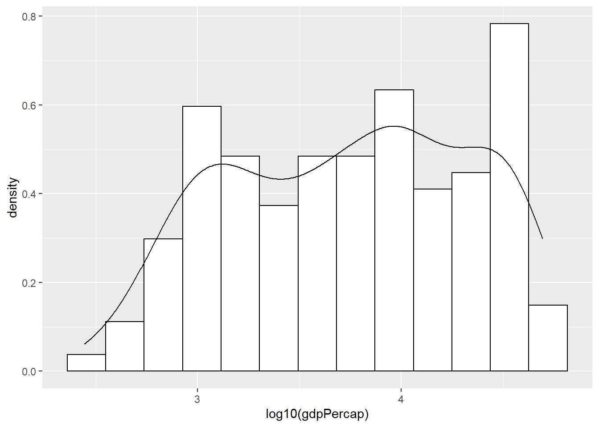

Chapter 4 Boxplots
# Histogram with mean of log10(gdpPercap) on the plot
plot5 <- ggplot(subset(gapminder, year == 2007),
aes(x = year, y = log10(gdpPercap)))
# if x axis variable is numeric, then one single boxplot
# if x axis variable is categorical, then works like facets
plot5 +
geom_boxplot() #+ coord_flip()
Try with ``continent" variable.